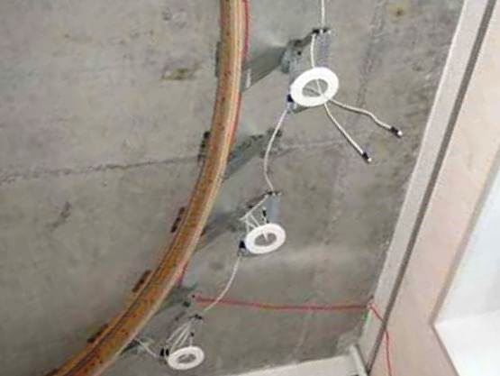

Качественный электромонтаж в Санкт-Петербурге и ленобласти, стаж 12 лет. Частный электрик, недорого и качественно.
Тел. 8 904 642 08 57 Николай.

Монтаж встраиваемых точечных светильников.
Статья, о встраиваемых светильниках, описание подробное и способ установки. В статье много рекомендаций и советов.

Большинство из нас уже имеют представление о точечных встраиваемых светильниках. За 15 лет пребывания на нашем рынке эти светильники уже успели завоевать общую популярность. Это объясняется их практичностью, многообразием форм, эстетичностью и простотой монтажа.
Использовать встраиваемые точечные светильники можно в качестве основного, дополнительного или декоративного света. Встраиваемые точечные светильники нашли себе применение во многих дизайнерских проектах благодаря своей способности подчёркивать любую деталь интерьера, акцентируя на ней общее внимание.
Сколько стоит монтировать встроенный светильник?
Количество светильников в штуках. |
Цена за монтаж 1 светильника в руб. |
До 3 штук. |
500. |
5 |
400. |
8 |
350 |
12. |
300 |
16. |
250 |
До 20 штук. |
200. |
От 20 штук. |
От 180 руб. |
Называются такие светильники «встраиваемыми», потому что они монтируются в какое-либо основание, то есть встраиваются. Самым распространённым основанием для такого типа светильников являются гипсокартонные листы, из которых изготавливают подвесные потолки, а также различные панели из пластика.
Для монтирования точечного светильника в гипсокартон или пластик необходимо наличие небольшого расстояния в межпотолочном пространстве. Это расстояние зависит от самой лампы и типа используемого светильника.
Если лампочка галогеновая, то рекомендуемое расстояние составляет от 6 до 7 см. Если это лампа накаливания, то межпотолочное пространство должно составлять не меньше 12 см. Перед монтированием светильника рекомендовано ознакомиться с прилагаемой инструкцией, где подробно описаны все требуемые размеры и расстояния.
Монтаж поворотных и фиксированных светильников.
По своей конструкции точечные светильники делятся на два типа – это поворотные светильники и фиксированные. К поворотным светильникам относятся такие точечные светильники, подвижную часть которых можно легко повернуть вокруг своей оси на 40 градусов. Это очень удобно, особенно при подчёркивании дизайна интерьера. У фиксированных светильников подвижная часть отсутствует, их свет направлен строго в одном направлении.
Если вы выбираете светильник, то уделите своё внимание на то, из каких материалов он изготовлен и на его качество исполнения. Большую часть предлагаемых на нашем рынке светильников составляют точечные светильники китайского производства. Они не всегда отличаются высоким качеством, однако среди китайской продукции встречается и такая, которая по своим качественным характеристикам может даже превзойти все западные аналоги. Широко представлен ассортимент светильников польского производства. Часто встречаются точечные светильники российского и украинского производства.
Благодаря такому огромному ассортименту, зачастую трудно сделать выбор. На рынке найдутся светильники для каждого потребителя – это и простая штампованная жестянка, и усыпанная кристаллами Swarowski дизайнерская вещь, чья стоимость может превысить несколько сотен долларов.
Внешний вид не является основным показателем при выборе точечного светильника. Здесь необходимо уделить внимание способу монтажа и надёжности креплений, ведь от этого во многом зависит то, как этот светильник будет прикреплён к вашему потолку.
Часто можно встретить стеклянные светильники, выполненные в форме шайбы или куба. Вес таких светильников может превышать 500 гр. Иногда крепления не в состоянии выдержать этот вес. Если вы оказались в подобной ситуации, у вас есть два пути решения сложившейся проблемы. Первый способ – вернуть светильник обратно в магазин, и второй – просить монтажников помочь вам.
Часто можно наблюдать такую ситуацию, когда светильники одного серийного номера отличаются, друг от друга по цвету или оттенку. Такое различие может быть очень заметным, если на потолке расстояние между этими светильниками небольшое.
Не стоит также забывать о таких взаимосвязанных вещах, как материал потолка и сами лампочки, на которые этот светильник рассчитан. В большинстве точечных светильников применяются галогеновые лампы. Эти лампы обладают высокой рабочей температурой, поэтому потолок из пластика может деформироваться под действием такого количества излучаемого тепла. Специалисты советую использовать лампы низких температур.
Из всего вышесказанного можно сделать вывод, что при покупке встраиваемого точечного светильника необходима консультация у специалиста, монтирующего светильники, и у специалиста по точечным светильникам. Они помогут вам правильно определиться в своём выборе.
 Поменять проводку в квартире.
Поменять проводку в квартире. Сколько будут стоить материалы.
Электрика в загородном доме стоимость работ.

Замена электропроводки в панельном доме.
Расценки на электропроводку квартир.
Замена проводки в хрущевке.
Электромонтаж в частном доме.
Электрика в загородном доме.
Сколько стоит замена электропроводки в двухкомнатной квартире?.
Электрик в новостройку однокомнатная квартира недорого.

Сколько стоит поменять электропроводку в 3-х комнатной квартире.